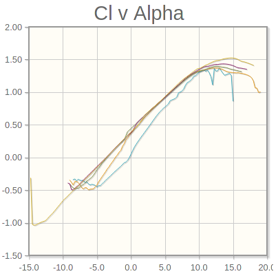
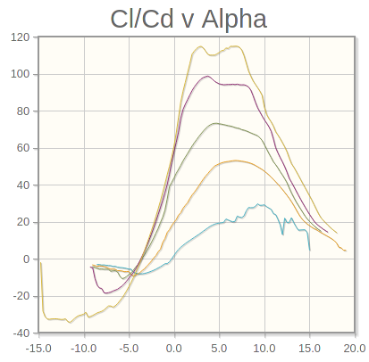

Iteration 2¶
from unyt import km, m, mm, g, kg, hr, s, degree, radian
import numpy as np
from math import pi as π
ρ = 1.225*kg/m**3 # air density
μinf = 1.81e-5*kg/(m*s) # viscosity of air
Goals:
Decrease aspect ratio
Initial Design¶
b = 2850*mm # wingspan
c = 230*mm # chord
S = b*c # wing area
AR = b**2/S
AR
unyt_quantity(12.39130435, '(dimensionless)')
Better, although I may have overdone it
Weight Estimate¶
Weight taken from freecad model > Parts spreadsheet.
Iteration not saved.
W = 3700*g # weight
Airfoil Selection¶
See also: https://youtu.be/kAXN3MlQxxc
V = 45*km/hr # cruise speed
Randomly selected, see https://rcmodelhub.com/how-fast-do-rc-planes-go/#0-typical-speeds-of-popular-rc-planes-
CL = (2*W)/(ρ*V**2*S)
CL.to('s**2/m')
unyt_quantity(0.05897975, 's**2/m')
Re = (ρ*V*c)/μinf
round(Re.to_value(), -3)
195000.0
As per: http://airfoiltools.com/airfoil/details?airfoil=clarky-il
Clark Y chosen because:
No need for inverted flight
Long term goal is efficiency
Relatively easy foam manufacturing

From bottom left up: Blue = 50,000 Orange = 100,000 Green = 200,000
# rough estimations
α0 = -3.75*degree
Clα = 1.05
e = 0.8
CLα = Clα/(1+(Clα/(π*e*AR)))
CLα
unyt_quantity(1.01575315, '(dimensionless)')
CL_unitless = CL.to_value('s**2/m')
CL_unitless
0.05897974750540949
α = α0+((CL_unitless/CLα)*radian)
α
unyt_quantity(-0.42311827, 'degree')

Notes¶
I previously used a lift curve slope (Clα) of 0.083 (instead of 1.05), because I misread the Cl v Alpha graph. This resulted in an α of 0.667 or 38°. My conclusion was:
Oops, angle of attack for cruise is uncomfortably close to aerodynamic stall. It should ideally be about 5° (see Cl/Cd v Alpha below).
We can increase CL by:
Increasing air speed
Increasing wing area
Decreasing weight is not a possibility
As α is now well below 10° (the point of aerodynamic stall for the Clark Y), this is not really applicable anymore. In fact, I have since actually changed my weight estimate downward because I had a feeling I was overestimating the wing weight (3744 -> 2340).
Since the cruise angle of attack is now actually on the low side, I’ll lower the airspeed in the next iteration. This will hopefully get us closer to 5°. Not exactly 5, but at least something higher than 0.